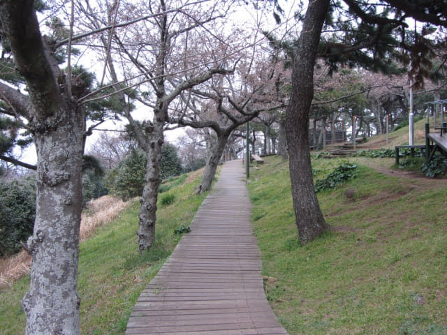
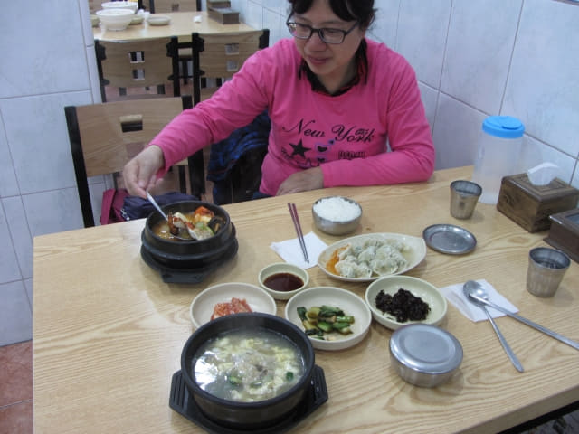

在濟州市區閒逛之際, 看見晴空一片, 浮雲朵朵, 便決定登上纱羅峯公園山頂, 準備欣賞被列為濟州島十景之一的纱羅峯日落景色, 抵山頂後四處閒逛和欣賞櫻花, 等待黃昏來臨之際, 怎料烏雲突出在西邊很快的聚集起來, 不斷擴散, 很快便將整個天空遮蔽, 天色更漸漸昏暗起來, 今天肯定看不到日落了! 天空竟然可以在短短的一小時間從晴朗轉變為昏陰, 這旅程從開始至今, 真是十分不順利。難怪天有不測之風雲! 既然如此, 就隨遇而安吧!
看見山下的濟州市一片灰暗, 恐怕很快便會下起雨來, 因為沒有攜帶雨傘, 便決定馬上離開。
我選擇循山邊的步道離開, 這邊的風景最開朗、最美。

離開纱羅峯山頂前再眺望山下的濟州港旅客碼頭, 我們明天便是從那裡乘船離開濟州島。
循來時的偶來18號小路一直往下走。
不一會便來到山腰的涼亭。
繼續一直往下走。
下山的速度比上山快很多, 約十分鐘便返回纱羅峯山麓的登山口, 正式結束了纱羅峯公園這短暫的行程。
接著循原路一直往下走。
晚餐於中央商店街 價廉物美餐廳
很順利返回山地川廣場, 看看手錶, 差不多下午六時五十分, 因和她相約了大約晚上七時在中央商店街1號入口附近會合, 便立即走下商店街, 等了一會, 看見她很開心的走來, 不用問啦! 當然是趁我不在時買了很多戰利品! 接著拉著我一邊走, 一邊對我說在中央商店街內找到一間我一定喜歡的餐廳 – 當然是價廉物美的餐廳啦!
「這間呀? 唔錯喎!」
「唔係~~~~! 沒有那麼高級! 係~~~~隔離個間, 都唔差架:)」
「看完價錢你一定會喜歡! 好似排骨湯飯 – 7000韓元, 水餃 3000韓元, 還有………」
看見價錢那麼實惠, 便毫不考慮在這裡用晚餐。
我叫了一客排骨湯飯; 她叫了一客海鮮湯飯; 水餃的價錢那麼吸引, 便再叫了一客。以這樣的價錢, 尚算豐富啦!

吃完晚餐, 在中央商店街閒逛了一會, 接著走上街道, 沿昏暗街道慢慢走, 約晚上八時三十分返回酒店。在酒店一樓大堂商務中心的電腦上了一會互聯網, 便乘電梯返回16F房間, 結束了今天的濟州市行程。
時間過得真快, 濟州島九天行程轉眼間便來到尾聲! 明天下午便乘船往木浦 (Mokpo), 展開這韓國春天之旅的第二部份行程。